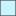

<!doctype html>
<html lang="en">
    <head>
        <meta charset="utf-8">
        <meta http-equiv="X-UA-Compatible" content="IE=edge">
        <meta name="viewport" content="initial-scale=1,user-scalable=no,maximum-scale=1,width=device-width">
        <meta name="mobile-web-app-capable" content="yes">
        <meta name="apple-mobile-web-app-capable" content="yes">
        <link rel="stylesheet" href="css/leaflet.css">
        <link rel="stylesheet" href="css/qgis2web.css"><link rel="stylesheet" href="css/fontawesome-all.min.css">
        <link rel="stylesheet" href="css/MarkerCluster.css">
        <link rel="stylesheet" href="css/MarkerCluster.Default.css">
        <link rel="stylesheet" href="css/leaflet-search.css">
        <link rel="stylesheet" href="css/leaflet-control-geocoder.Geocoder.css">
        <link rel="stylesheet" href="css/leaflet-measure.css">
		<link rel="stylesheet" href="css/Control.MiniMap.css">
		<link rel="stylesheet" href="css/L.Control.MousePosition.css">
		<link rel="stylesheet" href="css/leaflet.legend.css">
        <style>
        html, body, #map {
            width: 100%;
            height: 100%;
            padding: 0;
            margin: 0;
        }
        </style>
        <title>Posterunki klimatyczne 
					w Polsce</title>
    </head>
    <body>
        <div id="map">
        </div>
        <script src="js/qgis2web_expressions.js"></script>
        <script src="js/leaflet.js"></script>
        <script src="js/leaflet.rotatedMarker.js"></script>
        <script src="js/leaflet.pattern.js"></script>
        <script src="js/leaflet-hash.js"></script>
        <script src="js/Autolinker.min.js"></script>
        <script src="js/rbush.min.js"></script>
        <script src="js/labelgun.min.js"></script>
        <script src="js/labels.js"></script>
        <script src="js/leaflet-control-geocoder.Geocoder.js"></script>
        <script src="js/leaflet-measure.js"></script>
        <script src="js/leaflet.markercluster.js"></script>
        <script src="js/leaflet-search.js"></script>
		<script src="js/Control.MiniMap.js"></script>
		<script src="js/L.Control.MousePosition.js"></script>
		<script src="js/leaflet.legend.js"></script>
        <script src="data/Rzeki_7.js"></script>
        <script src="data/Zbiornikiwodne_8.js"></script>
        <script src="data/StacjesynoptyczneIMGW_9.js"></script>
	
        <script>
        var map = L.map('map', {
            zoomControl:true, maxZoom:28, minZoom:1
        }).fitBounds([[47.600043805554265,8.475886970925446],[55.64874771719466,33.15284210836211]]);
        var hash = new L.Hash(map);
        map.attributionControl.setPrefix('<a href="https://github.com/tomchadwin/qgis2web" target="_blank">qgis2web</a> &middot; <a href="https://leafletjs.com" title="A JS library for interactive maps">Leaflet</a> &middot; <a href="https://qgis.org">QGIS</a>');
        var autolinker = new Autolinker({truncate: {length: 30, location: 'smart'}});
        var measureControl = new L.Control.Measure({
            position: 'topleft',
            primaryLengthUnit: 'meters',
            secondaryLengthUnit: 'kilometers',
            primaryAreaUnit: 'sqmeters',
            secondaryAreaUnit: 'hectares'
        });
        measureControl.addTo(map);
        document.getElementsByClassName('leaflet-control-measure-toggle')[0]
        .innerHTML = '';
        document.getElementsByClassName('leaflet-control-measure-toggle')[0]
        .className += ' fas fa-ruler';
        var bounds_group = new L.featureGroup([]);
        function setBounds() {
        }
        map.createPane('pane_ESRIWorldTopo_0');
        map.getPane('pane_ESRIWorldTopo_0').style.zIndex = 400;
        var layer_ESRIWorldTopo_0 = L.tileLayer('https://services.arcgisonline.com/ArcGIS/rest/services/World_Topo_Map/MapServer/tile/{z}/{y}/{x}', {
            pane: 'pane_ESRIWorldTopo_0',
            opacity: 1.0,
            attribution: '',
            minZoom: 1,
            maxZoom: 28,
            minNativeZoom: 0,
            maxNativeZoom: 20
        });
        layer_ESRIWorldTopo_0;
        map.createPane('pane_ESRISatellite_1');
        map.getPane('pane_ESRISatellite_1').style.zIndex = 401;
        var layer_ESRISatellite_1 = L.tileLayer('https://server.arcgisonline.com/ArcGIS/rest/services/World_Imagery/MapServer/tile/{z}/{y}/{x}', {
            pane: 'pane_ESRISatellite_1',
            opacity: 1.0,
            attribution: '',
            minZoom: 1,
            maxZoom: 28,
            minNativeZoom: 0,
            maxNativeZoom: 19
        });
        layer_ESRISatellite_1;
        map.createPane('pane_OpenStreetMap_2');
        map.getPane('pane_OpenStreetMap_2').style.zIndex = 402;
        var layer_OpenStreetMap_2 = L.tileLayer('https://tile.openstreetmap.org/{z}/{x}/{y}.png', {
            pane: 'pane_OpenStreetMap_2',
            opacity: 1.0,
            attribution: '',
            minZoom: 1,
            maxZoom: 28,
            minNativeZoom: 0,
            maxNativeZoom: 19
        });
        layer_OpenStreetMap_2;
        map.addLayer(layer_OpenStreetMap_2);
        map.createPane('pane_rednieroczneopady_3');
        map.getPane('pane_rednieroczneopady_3').style.zIndex = 403;
        var img_rednieroczneopady_3 = 'data/rednieroczneopady_3.png';
        var img_bounds_rednieroczneopady_3 = [[48.96096964315635,13.905199957330039],[54.836436199793305,24.61724217629219]];
        var layer_rednieroczneopady_3 = new L.imageOverlay(img_rednieroczneopady_3,
                                              img_bounds_rednieroczneopady_3,
                                              {pane: 'pane_rednieroczneopady_3'});
        bounds_group.addLayer(layer_rednieroczneopady_3);
        map.createPane('pane_Usonecznienie_4');
        map.getPane('pane_Usonecznienie_4').style.zIndex = 404;
        var img_Usonecznienie_4 = 'data/Usonecznienie_4.png';
        var img_bounds_Usonecznienie_4 = [[48.96085265142932,13.898785852220724],[54.838232953181794,24.620580272401345]];
        var layer_Usonecznienie_4 = new L.imageOverlay(img_Usonecznienie_4,
                                              img_bounds_Usonecznienie_4,
                                              {pane: 'pane_Usonecznienie_4'});
        bounds_group.addLayer(layer_Usonecznienie_4);
        map.createPane('pane_redniarocznatemperatura_5');
        map.getPane('pane_redniarocznatemperatura_5').style.zIndex = 405;
        var img_redniarocznatemperatura_5 = 'data/redniarocznatemperatura_5.png';
        var img_bounds_redniarocznatemperatura_5 = [[48.96085263383819,13.89878560959867],[54.83823292606222,24.62058002302173]];
        var layer_redniarocznatemperatura_5 = new L.imageOverlay(img_redniarocznatemperatura_5,
                                              img_bounds_redniarocznatemperatura_5,
                                              {pane: 'pane_redniarocznatemperatura_5'});
        bounds_group.addLayer(layer_redniarocznatemperatura_5);
        map.createPane('pane_Granicewojewdztw_6');
        map.getPane('pane_Granicewojewdztw_6').style.zIndex = 406;
        var img_Granicewojewdztw_6 = 'data/Granicewojewdztw_6.png';
        var img_bounds_Granicewojewdztw_6 = [[47.19742356406744,10.894876499604537],[56.58666744782716,27.42513470885276]];
        var layer_Granicewojewdztw_6 = new L.imageOverlay(img_Granicewojewdztw_6,
                                              img_bounds_Granicewojewdztw_6,
                                              {pane: 'pane_Granicewojewdztw_6'});
        bounds_group.addLayer(layer_Granicewojewdztw_6);
        map.addLayer(layer_Granicewojewdztw_6);
        function pop_Rzeki_7(feature, layer) {
            var popupContent = '<table>\
                    <tr>\
                        <th scope="row">Nazwa</th>\
                        <td>' + (feature.properties['Nazwa'] !== null ? autolinker.link(feature.properties['Nazwa'].toLocaleString()) : '') + '</td>\
                    </tr>\
                    <tr>\
                        <th scope="row">Długość</th>\
                        <td>' + (feature.properties['Długość'] !== null ? autolinker.link(feature.properties['Długość'].toLocaleString() + ' km') : '') + '</td>\
                    </tr>\
                    <tr>\
                        <th scope="row">Rząd</th>\
                        <td>' + (feature.properties['Rząd'] !== null ? autolinker.link(feature.properties['Rząd'].toLocaleString()) : '') + '</td>\
                    </tr>\
                </table>';
            layer.bindPopup(popupContent, {maxHeight: 400});
        }

        function style_Rzeki_7_0() {
            return {
                pane: 'pane_Rzeki_7',
                opacity: 1,
                color: 'rgba(45,138,169,1.0)',
                dashArray: '',
                lineCap: 'square',
                lineJoin: 'bevel',
                weight: 1.0,
                fillOpacity: 0,
                interactive: true,
            }
        }
        map.createPane('pane_Rzeki_7');
        map.getPane('pane_Rzeki_7').style.zIndex = 407;
        map.getPane('pane_Rzeki_7').style['mix-blend-mode'] = 'normal';
        var layer_Rzeki_7 = new L.geoJson(json_Rzeki_7, {
            attribution: '',
            interactive: true,
            dataVar: 'json_Rzeki_7',
            layerName: 'layer_Rzeki_7',
            pane: 'pane_Rzeki_7',
            onEachFeature: pop_Rzeki_7,
            style: style_Rzeki_7_0,
        });
        bounds_group.addLayer(layer_Rzeki_7);
        map.addLayer(layer_Rzeki_7);
        function pop_Zbiornikiwodne_8(feature, layer) {
            var popupContent = '<table>\
			        <tr>\
                        <th scope="row">Nazwa</th>\
                        <td>' + (feature.properties['Nazwa'] !== null ? autolinker.link(feature.properties['Nazwa'].toLocaleString()) : '') + '</td>\
                    </tr>\
                    <tr>\
                        <th scope="row">Powierzchnia</th>\
                        <td>' + (feature.properties['Powierzchn'] !== null ? autolinker.link(feature.properties['Powierzchn'].toLocaleString() + ' km²') : '') + '</td>\
                    </tr>\
                    <tr>\
                        <th scope="row">Rodzaj</th>\
                        <td>' + (feature.properties['Rodzaj'] !== null ? autolinker.link(feature.properties['Rodzaj'].toLocaleString()) : '') + '</td>\
                    </tr>\
                </table>';
            layer.bindPopup(popupContent, {maxHeight: 400});
        }

        function style_Zbiornikiwodne_8_0() {
            return {
                pane: 'pane_Zbiornikiwodne_8',
                opacity: 1,
                color: 'rgba(93,93,93,1.0)',
                dashArray: '',
                lineCap: 'butt',
                lineJoin: 'miter',
                weight: 1.0, 
                fill: true,
                fillOpacity: 1,
                fillColor: 'rgba(197,245,255,1.0)',
                interactive: true,
            }
        }
        map.createPane('pane_Zbiornikiwodne_8');
        map.getPane('pane_Zbiornikiwodne_8').style.zIndex = 408;
        map.getPane('pane_Zbiornikiwodne_8').style['mix-blend-mode'] = 'normal';
        var layer_Zbiornikiwodne_8 = new L.geoJson(json_Zbiornikiwodne_8, {
            attribution: '',
            interactive: true,
            dataVar: 'json_Zbiornikiwodne_8',
            layerName: 'layer_Zbiornikiwodne_8',
            pane: 'pane_Zbiornikiwodne_8',
            onEachFeature: pop_Zbiornikiwodne_8,
            style: style_Zbiornikiwodne_8_0,
        });
        bounds_group.addLayer(layer_Zbiornikiwodne_8);
        map.addLayer(layer_Zbiornikiwodne_8);
        function pop_StacjesynoptyczneIMGW_9(feature, layer) {
            var popupContent = '<table>\
                    <tr>\
                        <th scope="row">Nazwa</th>\
                        <td>' + (feature.properties['NAZWA'] !== null ? autolinker.link(feature.properties['NAZWA'].toLocaleString()) : '') + '</td>\
                    </tr>\
                    <tr>\
                        <th scope="row">Kod</th>\
                        <td>' + (feature.properties['KOD'] !== null ? autolinker.link(feature.properties['KOD'].toLocaleString()) : '') + '</td>\
                    </tr>\
                    <tr>\
                        <th scope="row">Rodzaj</th>\
                        <td>' + (feature.properties['RODZAJ'] !== null ? autolinker.link(feature.properties['RODZAJ'].toLocaleString()) : '') + '</td>\
                    </tr>\
                    <tr>\
                        <th scope="row">Rząd</th>\
                        <td>' + (feature.properties['RZĄD'] !== null ? autolinker.link(feature.properties['RZĄD'].toLocaleString()) : '') + '</td>\
                    </tr>\
                    <tr>\
                        <th scope="row">Śr. temp.</th>\
                        <td>' + (feature.properties['ŚR. TEMP.'] !== null ? autolinker.link(feature.properties['ŚR. TEMP.'].toLocaleString() + ' °C') : '') + '</td>\
                    </tr>\
                    <tr>\
                        <th scope="row">Śr. opady.</th>\
                        <td>' + (feature.properties['ŚR. OPAD.'] !== null ? autolinker.link(feature.properties['ŚR. OPAD.'].toLocaleString() + ' mm') : '') + '</td>\
                    </tr>\
                    <tr>\
                        <th scope="row">Śr. usłon.</th>\
                        <td>' + (feature.properties['USŁON.'] !== null ? autolinker.link(feature.properties['USŁON.'].toLocaleString() + ' h') : '') + '</td>\
                    </tr>\
                    <tr>\
                        <th scope="row">Dług. geog.</th>\
                        <td>' + (feature.properties['DŁUG. GEO'] !== null ? autolinker.link(feature.properties['DŁUG. GEO'].toLocaleString()) : '') + '</td>\
                    </tr>\
                    <tr>\
                        <th scope="row">Szer. geog.</th>\
                        <td>' + (feature.properties['SZER. GEOG'] !== null ? autolinker.link(feature.properties['SZER. GEOG'].toLocaleString()) : '') + '</td>\
                    </tr>\
                </table>';
            layer.bindPopup(popupContent, {maxHeight: 400});
        }

        function style_StacjesynoptyczneIMGW_9_0() {
            return {
                pane: 'pane_StacjesynoptyczneIMGW_9',
                radius: 3.6,
                opacity: 1,
                color: 'rgba(35,35,35,1.0)',
                dashArray: '',
                lineCap: 'butt',
                lineJoin: 'miter',
                weight: 1,
                fill: true,
                fillOpacity: 1,
                fillColor: 'rgba(190,0,3,1.0)',
                interactive: true,
            }
        }
        map.createPane('pane_StacjesynoptyczneIMGW_9');
        map.getPane('pane_StacjesynoptyczneIMGW_9').style.zIndex = 409;
        map.getPane('pane_StacjesynoptyczneIMGW_9').style['mix-blend-mode'] = 'normal';
        var layer_StacjesynoptyczneIMGW_9 = new L.geoJson(json_StacjesynoptyczneIMGW_9, {
            attribution: '',
            interactive: true,
            dataVar: 'json_StacjesynoptyczneIMGW_9',
            layerName: 'layer_StacjesynoptyczneIMGW_9',
            pane: 'pane_StacjesynoptyczneIMGW_9',
            onEachFeature: pop_StacjesynoptyczneIMGW_9,
            pointToLayer: function (feature, latlng) {
                var context = {
                    feature: feature,
                    variables: {}
                };
                return L.circleMarker(latlng, style_StacjesynoptyczneIMGW_9_0(feature));
            },
        });
        var cluster_StacjesynoptyczneIMGW_9 = new L.MarkerClusterGroup({showCoverageOnHover: false,
            spiderfyDistanceMultiplier: 2});
        cluster_StacjesynoptyczneIMGW_9.addLayer(layer_StacjesynoptyczneIMGW_9);

        bounds_group.addLayer(layer_StacjesynoptyczneIMGW_9);
        cluster_StacjesynoptyczneIMGW_9.addTo(map);
            var title = new L.Control();
            title.onAdd = function (map) {
                this._div = L.DomUtil.create('div', 'info');
                this.update();
                return this._div;
            };
            title.update = function () {
                this._div.innerHTML = '<h2>Posterunki klimatyczne w Polsce</h2>';
            };
            title.addTo(map);
            var abstract = new L.Control({'position':'topright'});
            abstract.onAdd = function (map) {
                this._div = L.DomUtil.create('div',
                'leaflet-control abstract');
                this._div.id = 'abstract'
                    this._div.setAttribute("onmouseenter", "abstract.show()");
                    this._div.setAttribute("onmouseleave", "abstract.hide()");
                    this.hide();
                    return this._div;
                };
                abstract.hide = function () {
                    this._div.classList.remove("abstractUncollapsed");
                    this._div.classList.add("abstract");
                    this._div.innerHTML = 'i'
                }
                abstract.show = function () {
                    this._div.classList.remove("abstract");
                    this._div.classList.add("abstractUncollapsed");
                    this._div.innerHTML = 'Portal mapowy ma na celu przedstawić rozkład głównych posterunków synoptycznych IMGW-PIB na obszarze Polski. Dodatkowo przedstawione są podstawowe parametry klimatu Polski, takie jak: średnia roczna temperatura, średnie roczne opady czy średnie usłonecznienie. Wymienione parametry prezentowane są również w formie rastrowej, uzyskanej dzięki metodom geostatystycznym. W odniesieniu do klimatu na obszarze kraju przedstawiono również ważniejsze wody powierzchniowe, w tym rzeki oraz zbiorniki wodne. ';
            };
            abstract.addTo(map);
        var osmGeocoder = new L.Control.Geocoder({
            collapsed: true,
            position: 'topleft',
            text: 'Search',
            title: 'Testing'
        }).addTo(map);
        document.getElementsByClassName('leaflet-control-geocoder-icon')[0]
        .className += ' fa fa-search';
        document.getElementsByClassName('leaflet-control-geocoder-icon')[0]
        .title += 'Search for a place';
        var baseMaps = {"OpenStreetMap": layer_OpenStreetMap_2,"ESRI Sattelite": layer_ESRISatellite_1,"ESRI Topo": layer_ESRIWorldTopo_0,};
		var overlaysMap = {' Stacje synoptyczne (IMGW)': cluster_StacjesynoptyczneIMGW_9,' Zbiorniki wodne': layer_Zbiornikiwodne_8,' Rzeki': layer_Rzeki_7,"Granice województw": layer_Granicewojewdztw_6,"Średnia roczna temperatura": layer_redniarocznatemperatura_5,"Usłonecznienie": layer_Usonecznienie_4,"Średnie roczne opady": layer_rednieroczneopady_3,};
        L.control.layers(baseMaps,overlaysMap).addTo(map);L.control.scale({position: 'bottomleft', maxWidth: 100, metric: true, imperial: false, updateWhenIdle: false}).addTo(map);
        setBounds();
        map.addControl(new L.Control.Search({
            layer: cluster_StacjesynoptyczneIMGW_9,
            initial: false,
            hideMarkerOnCollapse: true,
            propertyName: 'NAZWA'}));
        document.getElementsByClassName('search-button')[0].className +=
         ' fa fa-binoculars';
        L.ImageOverlay.include({
            getBounds: function () {
                return this._bounds;
            }
        });
        resetLabels([layer_StacjesynoptyczneIMGW_9]);
        map.on("zoomend", function(){
            resetLabels([layer_StacjesynoptyczneIMGW_9]);
        });
        map.on("layeradd", function(){
            resetLabels([layer_StacjesynoptyczneIMGW_9]);
        });
        map.on("layerremove", function(){
            resetLabels([layer_StacjesynoptyczneIMGW_9]);
        });
		var basemapUrl = 'https://tile.openstreetmap.org/{z}/{x}/{y}.png';
		var basemap = new L.TileLayer(basemapUrl, {minZoom: 0, maxZoom: 13});
		var minMap = new L.Control.MiniMap(basemap).addTo(map);
		L.control.mousePosition().addTo(map);
		L.control.Legend({
		position: "bottomleft",
		legends: [
        {
            label: "Stacje synoptyczne",
            type: "image",
            url: "legend/StacjesynoptyczneIMGW_9.png",
        },
        {
            label: "Rzeki",
            type: "image",
            url: "legend/Rzeki_7.png",
        },
		{
            label: "Zbiorniki wodne",
            type: "image",
            url: "legend/Zbiornikiwodne_8.png",
        }
		]
		}).addTo(map);
        </script>
    </body>
</html>